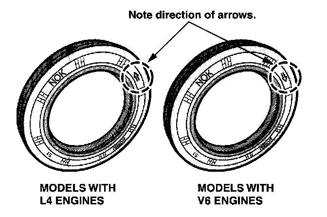
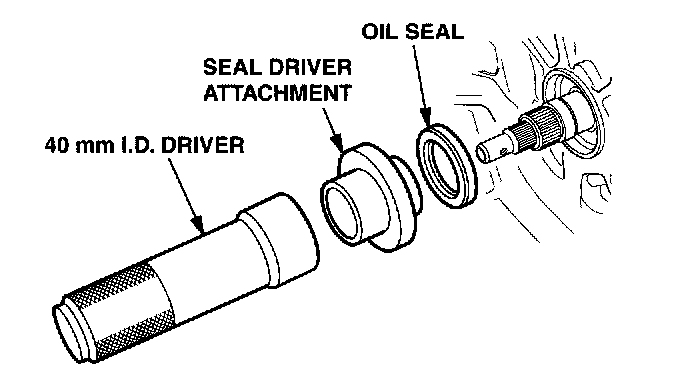

Torque Converter Oil Seal Installation Tool
Service Bulletin:00-008
Date:
March 6, 2000
Title:
Torque Converter Oil Seal Installation Tool
Models:
All Models With L4 or V6 Engine and A/T With 44 mm I.D. Torque Converter Oil Seal
The service manual procedure for installing the torque converter oil seal requires you to disassemble the transmission. A new required special tool, which attaches to your existing 40 mm I.D. driver, lets you install this seal without removing the main shaft or disassembling the transmission.
REQUIRED SPECIAL TOOLS
Seal Driver Attachment: T/N 07XAD-001000A (Shipped to all dealers March 2000 as a required special tool)
40 mm I.D. Driver: T/N 07746-0030100
ORDERING INFORMATION
Additional seal driver attachments are available from American Honda using normal parts ordering procedures.
WARRANTY CLAIM INFORMATION
None. This service bulletin is for information only.
PROCEDURE
1. Remove the transmission (see section 14 of the appropriate service manual).
2. Remove and discard the torque converter oil seal. Be careful not to damage the torque converter housing.

3. Select the appropriate replacement seal.

4. Press the long end of the seal driver attachment into the driver. Press the new seal onto the short end. Do not apply any type of sealer to the seal or the torque converter housing; you must install the seal dry.
5. Slide the tool over the mainshaft as far as it will go.
6. With a soft-face hammer, lightly tap the driver until the seal is fully seated in the torque converter housing.
7. Reinstall the transmission.